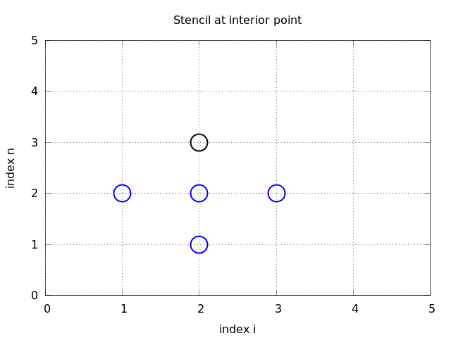
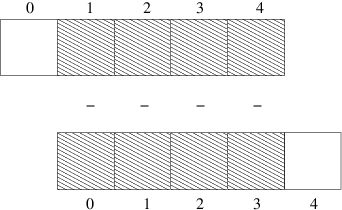
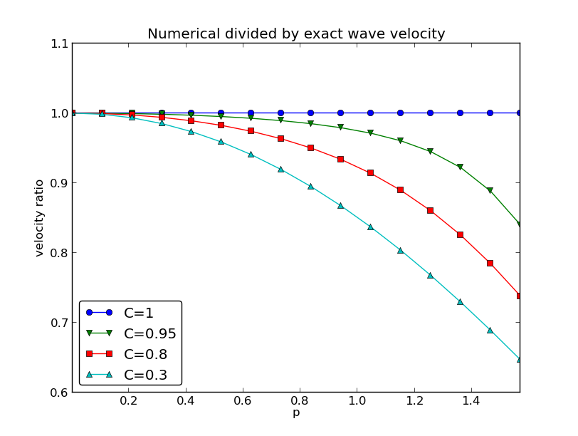
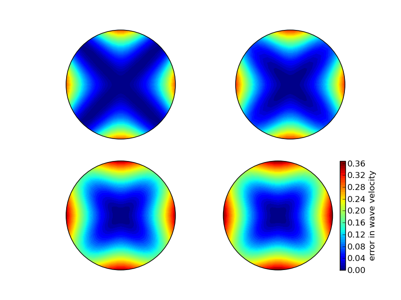

Study guide: Finite difference methods for wave motion
Sep 10, 2015
Finite difference methods for waves on a string
Waves on a string can be modeled by the wave equation
$$ \frac{\partial^2 u}{\partial t^2} = c^2 \frac{\partial^2 u}{\partial x^2} $$
\( u(x,t) \) is the displacement of the string
The complete initial-boundary value problem
$$
\begin{align}
\frac{\partial^2 u}{\partial t^2} &=
c^2 \frac{\partial^2 u}{\partial x^2}, \quad &x\in (0,L),\ t\in (0,T]
\tag{1}\\
u(x,0) &= I(x), \quad &x\in [0,L]
\tag{2}\\
\frac{\partial}{\partial t}u(x,0) &= 0, \quad &x\in [0,L]
\tag{3}\\
u(0,t) & = 0, \quad &t\in (0,T]
\tag{4}\\
u(L,t) & = 0, \quad &t\in (0,T]
\tag{5}
\end{align}
$$
Input data in the problem
- Initial condition \( u(x,0)=I(x) \): initial string shape
- Initial condition \( u_t(x,0)=0 \): string starts from rest
- \( c=\sqrt{T/\varrho} \): velocity of waves on the string
- (\( T \) is the tension in the string, \( \varrho \) is density of the string)
- Two boundary conditions on \( u \): \( u=0 \) means fixed ends (no displacement)
Rule for number of initial and boundary conditions:
- \( u_{tt} \) in the PDE: two initial conditions, on \( u \) and \( u_t \)
- \( u_{t} \) (and no \( u_{tt} \)) in the PDE: one initial conditions, on \( u \)
- \( u_{xx} \) in the PDE: one boundary condition on \( u \) at each boundary point
Demo of a vibrating string (\( C=0.8 \))
- Our numerical method is sometimes exact (!)
- Our numerical method is sometimes subject to serious non-physical effects
Demo of a vibrating string (\( C=1.0012 \))
Ooops!
Step 1: Discretizing the domain
Mesh in time:
$$
\begin{equation}
0 = t_0 < t_1 < t_2 < \cdots < t_{N_t-1} < t_{N_t} = T \end{equation}
$$
Mesh in space:
$$
\begin{equation}
0 = x_0 < x_1 < x_2 < \cdots < x_{N_x-1} < x_{N_x} = L \end{equation}
$$
Uniform mesh with constant mesh spacings \( \Delta t \) and \( \Delta x \):
$$
\begin{equation}
x_i = i\Delta x,\ i=0,\ldots,N_x,\quad
t_i = n\Delta t,\ n=0,\ldots,N_t
\end{equation}
$$
The discrete solution
- The numerical solution is a mesh function: \( u_i^n \approx \uex(x_i,t_n) \)
- Finite difference stencil (or scheme): equation for \( u^n_i \) involving neighboring space-time points

Step 2: Fulfilling the equation at the mesh points
Let the PDE be satisfied at all interior mesh points:
$$
\begin{equation}
\frac{\partial^2}{\partial t^2} u(x_i, t_n) =
c^2\frac{\partial^2}{\partial x^2} u(x_i, t_n),
\tag{6}
\end{equation}
$$
for \( i=1,\ldots,N_x-1 \) and \( n=1,\ldots,N_t-1 \).
For \( n=0 \) we have the initial conditions \( u=I(x) \) and \( u_t=0 \), and at the boundaries \( i=0,N_x \) we have the boundary condition \( u=0 \).
Step 3: Replacing derivatives by finite differences
Widely used finite difference formula for the second-order derivative:
$$ \frac{\partial^2}{\partial t^2}u(x_i,t_n)\approx
\frac{u_i^{n+1} - 2u_i^n + u^{n-1}_i}{\Delta t^2}= [D_tD_t u]^n_i$$
and
$$ \frac{\partial^2}{\partial x^2}u(x_i,t_n)\approx
\frac{u_{i+1}^{n} - 2u_i^n + u^{n}_{i-1}}{\Delta x^2} = [D_xD_x u]^n_i
$$
Step 3: Algebraic version of the PDE
Replace derivatives by differences:
$$
\begin{equation}
\frac{u_i^{n+1} - 2u_i^n + u^{n-1}_i}{\Delta t^2} =
c^2\frac{u_{i+1}^{n} - 2u_i^n + u^{n}_{i-1}}{\Delta x^2},
\tag{7}
\end{equation}
$$
In operator notation:
$$
\begin{equation}
[D_tD_t u = c^2 D_xD_x]^{n}_i
\tag{8}
\end{equation}
$$
Step 3: Algebraic version of the initial conditions
- Need to replace the derivative in the initial condition \( u_t(x,0)=0 \) by a finite difference approximation
- The differences for \( u_{tt} \) and \( u_{xx} \) have second-order accuracy
- Use a centered difference for \( u_t(x,0) \)
$$ [D_{2t} u]^n_i = 0,\quad n=0\quad\Rightarrow\quad
u^{n-1}_i=u^{n+1}_i,\quad i=0,\ldots,N_x$$
The other initial condition \( u(x,0)=I(x) \) can be computed by
$$ u_i^0 = I(x_i),\quad i=0,\ldots,N_x$$
Step 4: Formulating a recursive algorithm
- Nature of the algorithm: compute \( u \) in space at \( t=\Delta t, 2\Delta t, 3\Delta t,... \)
- Three time levels are involved in the general discrete equation: \( n+1 \), \( n \), \( n-1 \)
- \( u^n_i \) and \( u^{n-1}_i \) are then already computed for \( i=0,\ldots,N_x \), and \( u^{n+1}_i \) is the unknown quantity
Write out \( [D_tD_t u = c^2 D_xD_x]^{n}_i \) and solve for \( u^{n+1}_i \),
$$
\begin{equation}
u^{n+1}_i = -u^{n-1}_i + 2u^n_i + C^2
\left(u^{n}_{i+1}-2u^{n}_{i} + u^{n}_{i-1}\right)
\tag{9}
\end{equation}
$$
The Courant number
$$
\begin{equation}
C = c\frac{\Delta t}{\Delta x},
\end{equation}
$$
is known as the (dimensionless) Courant number
There is only one parameter, \( C \), in the discrete model: \( C \) lumps mesh parameters \( \Delta t \) and \( \Delta x \) with the only physical parameter, the wave velocity \( c \). The value \( C \) and the smoothness of \( I(x) \) govern the quality of the numerical solution.
The finite difference stencil
The stencil for the first time level
- Problem: the stencil for \( n=1 \) involves \( u^{-1}_i \), but time \( t=-\Delta t \) is outside the mesh
- Remedy: use the initial condition \( u_t=0 \) together with the stencil to eliminate \( u^{-1}_i \)
Initial condition:
$$ [D_{2t}u=0]^0_i\quad\Rightarrow\quad u^{-1}_i=u^1_i$$
Insert in stencil \( [D_tD_tu = c^2D_xD_x]^0_i \) to get
$$
\begin{equation}
u_i^1 = u^0_i - \half
C^2\left(u^{n}_{i+1}-2u^{n}_{i} + u^{n}_{i-1}\right)
\tag{10}
\end{equation}
$$
The algorithm
- Compute \( u^0_i=I(x_i) \) for \( i=0,\ldots,N_x \)
- Compute \( u^1_i \) by (10) and set \( u_i^1=0 \) for the boundary points \( i=0 \) and \( i=N_x \), for \( n=1,2,\ldots,N-1 \),
- For each time level \( n=1,2,\ldots,N_t-1 \)
- apply (9) to find \( u^{n+1}_i \) for \( i=1,\ldots,N_x-1 \)
- set \( u^{n+1}_i=0 \) for the boundary points \( i=0 \), \( i=N_x \).
Moving finite difference stencil
web page or a movie file.
Sketch of an implementation (1)
- Arrays:
-
u[i]stores \( u^{n+1}_i \) -
u_1[i]stores \( u^n_i \) -
u_2[i]stores \( u^{n-1}_i \)
u is the unknown to be computed (a spatial mesh
function), u_k is the computed spatial mesh function k
time steps back in time.
PDE solvers should save memory
The algorithm only needs to access the three most recent time levels, so we need only three arrays for \( u_i^{n+1} \), \( u_i^n \), and \( u_i^{n-1} \), \( i=0,\ldots,N_x \). Storing all the solutions in a two-dimensional array of size \( (N_x+1)\times (N_t+1) \) would be possible in this simple one-dimensional PDE problem, but not in large 2D problems and not even in small 3D problems.
Sketch of an implementation (2)
# Given mesh points as arrays x and t (x[i], t[n])
dx = x[1] - x[0]
dt = t[1] - t[0]
C = c*dt/dx # Courant number
Nt = len(t)-1
C2 = C**2 # Help variable in the scheme
# Set initial condition u(x,0) = I(x)
for i in range(0, Nx+1):
u_1[i] = I(x[i])
# Apply special formula for first step, incorporating du/dt=0
for i in range(1, Nx):
u[i] = u_1[i] - 0.5*C**2(u_1[i+1] - 2*u_1[i] + u_1[i-1])
u[0] = 0; u[Nx] = 0 # Enforce boundary conditions
# Switch variables before next step
u_2[:], u_1[:] = u_1, u
for n in range(1, Nt):
# Update all inner mesh points at time t[n+1]
for i in range(1, Nx):
u[i] = 2u_1[i] - u_2[i] - \
C**2(u_1[i+1] - 2*u_1[i] + u_1[i-1])
# Insert boundary conditions
u[0] = 0; u[Nx] = 0
# Switch variables before next step
u_2[:], u_1[:] = u_1, u
Verification
- Think about testing and verification before you start implementing the algorithm!
- Powerful testing tool: method of manufactured solutions and computation of convergence rates
- Will need a source term in the PDE and \( u_t(x,0)\neq 0 \)
- Even more powerful method: exact solution of the scheme
A slightly generalized model problem
Add source term \( f \) and nonzero initial condition \( u_t(x,0) \):
$$
\begin{align}
u_{tt} &= c^2 u_{xx} + f(x,t),
\tag{11}\\
u(x,0) &= I(x), \quad &x\in [0,L]
\tag{12}\\
u_t(x,0) &= V(x), \quad &x\in [0,L]
\tag{13}\\
u(0,t) & = 0, \quad & t>0,
\tag{14}\\
u(L,t) & = 0, \quad &t>0
\tag{15}
\end{align}
$$
Discrete model for the generalized model problem
$$
\begin{equation}
[D_tD_t u = c^2 D_xD_x + f]^{n}_i
\tag{16}
\end{equation}
$$
Writing out and solving for the unknown \( u^{n+1}_i \):
$$
\begin{equation}
u^{n+1}_i = -u^{n-1}_i + 2u^n_i + C^2
(u^{n}_{i+1}-2u^{n}_{i} + u^{n}_{i-1}) + \Delta t^2 f^n_i
\tag{17}
\end{equation}
$$
Modified equation for the first time level
Centered difference for \( u_t(x,0) = V(x) \):
$$ [D_{2t}u = V]^0_i\quad\Rightarrow\quad u^{-1}_i = u^{1}_i - 2\Delta t V_i,$$
Inserting this in the stencil (17) for \( n=0 \) leads to
$$
\begin{equation}
u^{1}_i = u^0_i - \Delta t V_i + {\half}
C^2
\left(u^{n}_{i+1}-2u^{n}_{i} + u^{n}_{i-1}\right) + \half\Delta t^2 f^n_i
\tag{18}
\end{equation}
$$
Using an analytical solution of physical significance
- Standing waves occur in real life on a string
- Can be analyzed mathematically (known exact solution)
$$
\begin{equation}
\uex(x,y,t)) = A\sin\left(\frac{\pi}{L}x\right)
\cos\left(\frac{\pi}{L}ct\right)
\tag{19}
\end{equation}
$$
- PDE data: \( f=0 \), boundary conditions \( \uex(0,t)=\uex(L,0)=0 \), initial conditions \( I(x)=A\sin\left(\frac{\pi}{L}x\right) \) and \( V=0 \)
- Note: \( u_i^{n+1}\neq\uex(x_i,t_{n+1} \), and we do not know the error, so testing must aim at reproducing the expected convergence rates
Manufactured solution: principles
- Disadvantage with the previous physical solution: it does not test \( V\neq 0 \) and \( f\neq 0 \)
- Method of manufactured solution:
- Choose some \( \uex(x,t) \)
- Insert in PDE and fit \( f \)
- Set boundary and initial conditions compatible with the chosen \( \uex(x,t) \)
Manufactured solution: example
$$ \uex(x,t) = x(L-x)\sin t$$
PDE \( u_{tt}=c^2u_{xx}+f \):
$$ -x(L-x)\sin t = -2\sin t + f\quad\Rightarrow f = (2 - x(L-x))\sin t$$
Implied initial conditions:
$$
\begin{align*}
u(x,0) &= I(x) = 0\\
u_t(x,0) &= V(x) = - x(L-x)
\end{align*}
$$
Boundary conditions:
$$ u(x,0) = u(x,L) = 0 $$
Testing a manufactured solution
- Introduce common mesh parameter: \( h=\Delta t \), \( \Delta x =ch/C \)
- This \( h \) keeps \( C \) and \( \Delta t/\Delta x \) constant
- Select coarse mesh \( h \): \( h_0 \)
- Run experiments with \( h_i=2^{-i}h_0 \) (halving the cell size), \( i=0,\ldots,m \)
- Record the error \( E_i \) and \( h_i \) in each experiment
- Compute pariwise convergence rates \( r_i= \ln E_{i+1}/E_{i}/\ln h_{i+1}/h_{i} \)
- Verification: \( r_i\rightarrow 2 \) as \( i \) increases
Constructing an exact solution of the discrete equations
- Manufactured solution with computation of convergence rates: much manual work
- Simpler and more powerful: use an exact solution for \( u^{n}_i \)
- A linear or quadratic \( \uex \) in \( x \) and \( t \) is often a good candidate
Analytical work with the PDE problem
Here, choose \( \uex \) such that \( \uex(x,0)=\uex(L,0)=0 \):
$$ \uex (x,t) = x(L-x)(1+{\half}t), $$
Insert in the PDE and find \( f \):
$$ f(x,t)=2(1+t)c^2$$
Initial conditions:
$$ I(x) = x(L-x),\quad V(x)={\half}x(L-x) $$
Analytical work with the discrete equations (1)
We want to show that \( \uex \) also solves the discrete equations!
Useful preliminary result:
$$
\begin{align}
\lbrack D_tD_t t^2\rbrack^n &= \frac{t_{n+1}^2 - 2t_n^2 + t_{n-1}^2}{\Delta t^2}
= (n+1)^2 -n^2 + (n-1)^2 = 2\\
\lbrack D_tD_t t\rbrack^n &= \frac{t_{n+1} - 2t_n + t_{n-1}}{\Delta t^2}
= \frac{((n+1) -n + (n-1))\Delta t}{\Delta t^2} = 0
\end{align}
$$
Hence,
$$ [D_tD_t \uex]^n_i = x_i(L-x_i)[D_tD_t (1+{\half}t)]^n =
x_i(L-x_i){\half}[D_tD_t t]^n = 0$$
Analytical work with the discrete equations (1)
$$
\begin{align*}
\lbrack D_xD_x \uex\rbrack^n_i &=
(1+{\half}t_n)\lbrack D_xD_x (xL-x^2)\rbrack_i =
(1+{\half}t_n)\lbrack LD_xD_x x - D_xD_x x^2\rbrack_i \\
&= -2(1+{\half}t_n)
\end{align*}
$$
Now, \( f^n_i = 2(1+{\half}t_n)c^2 \) and we get
$$ [D_tD_t \uex - c^2D_xD_x\uex - f]^n_i = 0 - c^2(-1)2(1 + {\half}t_n
+ 2(1+{\half}t_n)c^2 = 0$$
Moreover, \( \uex(x_i,0)=I(x_i) \), \( \partial \uex/\partial t = V(x_i) \) at \( t=0 \), and \( \uex(x_0,t)=\uex(x_{N_x},0)=0 \). Also the modified scheme for the first time step is fulfilled by \( \uex(x_i,t_n) \).
Testing with the exact discrete solution
- We have established that \( u^{n+1}_i = \uex(x_i,t_{n+1})=x_i(L-x_i)(1+t_{n+1}/2) \)
- Run one simulation with one choice of \( c \), \( \Delta t \), and \( \Delta x \)
- Check that \( \max_i |u^{n+1}_i - \uex(x_i,t_{n+1})| < \epsilon \), \( \epsilon\sim 10^{-14} \) (machine precision + some round-off errors)
- This is the simplest and best verification test
Later we show that the exact solution of the discrete equations can be obtained by \( C=1 \) (!)
Implementation
The algorithm
- Compute \( u^0_i=I(x_i) \) for \( i=0,\ldots,N_x \)
- Compute \( u^1_i \) by (10) and set \( u_i^1=0 \) for the boundary points \( i=0 \) and \( i=N_x \), for \( n=1,2,\ldots,N-1 \),
- For each time level \( n=1,2,\ldots,N_t-1 \)
- apply (9) to find \( u^{n+1}_i \) for \( i=1,\ldots,N_x-1 \)
- set \( u^{n+1}_i=0 \) for the boundary points \( i=0 \), \( i=N_x \).
What do to with the solution?
- Different problem settings demand different actions with the computed \( u^{n+1}_i \) at each time step
- Solution: let the solver function make a callback to a user function where the user can do whatever is desired with the solution
- Advantage: solver just solves and user uses the solution
def user_action(u, x, t, n):
# u[i] at spatial mesh points x[i] at time t[n]
# plot u
# or store u
Making a solver function
import numpy as np
def solver(I, V, f, c, L, dt, C, T, user_action=None):
"""Solve u_tt=c^2*u_xx + f on (0,L)x(0,T]."""
Nt = int(round(T/dt))
t = np.linspace(0, Nt*dt, Nt+1) # Mesh points in time
dx = dt*c/float(C)
Nx = int(round(L/dx))
x = np.linspace(0, L, Nx+1) # Mesh points in space
C2 = C**2 # Help variable in the scheme
if f is None or f == 0 :
f = lambda x, t: 0
if V is None or V == 0:
V = lambda x: 0
u = np.zeros(Nx+1) # Solution array at new time level
u_1 = np.zeros(Nx+1) # Solution at 1 time level back
u_2 = np.zeros(Nx+1) # Solution at 2 time levels back
import time; t0 = time.clock() # for measuring CPU time
# Load initial condition into u_1
for i in range(0,Nx+1):
u_1[i] = I(x[i])
if user_action is not None:
user_action(u_1, x, t, 0)
# Special formula for first time step
n = 0
for i in range(1, Nx):
u[i] = u_1[i] + dt*V(x[i]) + \
0.5*C2*(u_1[i-1] - 2*u_1[i] + u_1[i+1]) + \
0.5*dt**2*f(x[i], t[n])
u[0] = 0; u[Nx] = 0
if user_action is not None:
user_action(u, x, t, 1)
# Switch variables before next step
u_2[:] = u_1; u_1[:] = u
for n in range(1, Nt):
# Update all inner points at time t[n+1]
for i in range(1, Nx):
u[i] = - u_2[i] + 2*u_1[i] + \
C2*(u_1[i-1] - 2*u_1[i] + u_1[i+1]) + \
dt**2*f(x[i], t[n])
# Insert boundary conditions
u[0] = 0; u[Nx] = 0
if user_action is not None:
if user_action(u, x, t, n+1):
break
# Switch variables before next step
u_2[:] = u_1; u_1[:] = u
cpu_time = t0 - time.clock()
return u, x, t, cpu_time
Verification: exact quadratic solution
Exact solution of the PDE problem and the discrete equations: \( \uex (x,t) = x(L-x)(1+{\half}t) \)
def test_quadratic():
"""Check that u(x,t)=x(L-x)(1+t/2) is exactly reproduced."""
def u_exact(x, t):
return x*(L-x)*(1 + 0.5*t)
def I(x):
return u_exact(x, 0)
def V(x):
return 0.5*u_exact(x, 0)
def f(x, t):
return 2*(1 + 0.5*t)*c**2
L = 2.5
c = 1.5
C = 0.75
Nx = 6 # Very coarse mesh for this exact test
dt = C*(L/Nx)/c
T = 18
def assert_no_error(u, x, t, n):
u_e = u_exact(x, t[n])
diff = np.abs(u - u_e).max()
tol = 1E-13
assert diff < tol
solver(I, V, f, c, L, dt, C, T,
user_action=assert_no_error)
Visualization: animating \( u(x,t) \)
Make a viz function for animating the curve, with plotting
in a user_action function plot_u:
def viz(
I, V, f, c, L, dt, C, T, # PDE paramteres
umin, umax, # Interval for u in plots
animate=True, # Simulation with animation?
tool='matplotlib', # 'matplotlib' or 'scitools'
solver_function=solver, # Function with numerical algorithm
):
"""Run solver and visualize u at each time level."""
def plot_u_st(u, x, t, n):
"""user_action function for solver."""
plt.plot(x, u, 'r-',
xlabel='x', ylabel='u',
axis=[0, L, umin, umax],
title='t=%f' % t[n], show=True)
# Let the initial condition stay on the screen for 2
# seconds, else insert a pause of 0.2 s between each plot
time.sleep(2) if t[n] == 0 else time.sleep(0.2)
plt.savefig('frame_%04d.png' % n) # for movie making
class PlotMatplotlib:
def __call__(self, u, x, t, n):
"""user_action function for solver."""
if n == 0:
plt.ion()
self.lines = plt.plot(x, u, 'r-')
plt.xlabel('x'); plt.ylabel('u')
plt.axis([0, L, umin, umax])
plt.legend(['t=%f' % t[n]], loc='lower left')
else:
self.lines[0].set_ydata(u)
plt.legend(['t=%f' % t[n]], loc='lower left')
plt.draw()
time.sleep(2) if t[n] == 0 else time.sleep(0.2)
plt.savefig('tmp_%04d.png' % n) # for movie making
if tool == 'matplotlib':
import matplotlib.pyplot as plt
plot_u = PlotMatplotlib()
elif tool == 'scitools':
import scitools.std as plt # scitools.easyviz interface
plot_u = plot_u_st
import time, glob, os
# Clean up old movie frames
for filename in glob.glob('tmp_*.png'):
os.remove(filename)
# Call solver and do the simulaton
user_action = plot_u if animate else None
u, x, t, cpu = solver_function(
I, V, f, c, L, dt, C, T, user_action)
# Make video files
fps = 4 # frames per second
codec2ext = dict(flv='flv', libx264='mp4', libvpx='webm',
libtheora='ogg') # video formats
filespec = 'tmp_%04d.png'
movie_program = 'ffmpeg' # or 'avconv'
for codec in codec2ext:
ext = codec2ext[codec]
cmd = '%(movie_program)s -r %(fps)d -i %(filespec)s '\
'-vcodec %(codec)s movie.%(ext)s' % vars()
os.system(cmd)
if tool == 'scitools':
# Make an HTML play for showing the animation in a browser
plt.movie('tmp_*.png', encoder='html', fps=fps,
output_file='movie.html')
return cpu
Note: plot_u is function inside function and remembers the
local variables in viz (known as a closure).
Making movie files
- Store spatial curve in a file, for each time level
- Name files like
'something_%04d.png' % frame_counter - Combine files to a movie
Terminal> scitools movie encoder=html output_file=movie.html \
fps=4 frame_*.png # web page with a player
Terminal> avconv -r 4 -i frame_%04d.png -c:v flv movie.flv
Terminal> avconv -r 4 -i frame_%04d.png -c:v libtheora movie.ogg
Terminal> avconv -r 4 -i frame_%04d.png -c:v libx264 movie.mp4
Terminal> avconv -r 4 -i frame_%04d.png -c:v libpvx movie.webm
- Zero padding (
%04d) is essential for correct sequence of frames insomething_*.png(Unix alphanumeric sort) - Remove old
frame_*.pngfiles before making a new movie
Running a case
- Vibrations of a guitar string
- Triangular initial shape (at rest)
$$
\begin{equation}
I(x) = \left\lbrace
\begin{array}{ll}
ax/x_0, & x < x_0\\
a(L-x)/(L-x_0), & \hbox{otherwise}
\end{array}\right.
\tag{20}
\end{equation}
$$
Appropriate data:
- \( L=75 \) cm, \( x_0=0.8L \), \( a=5 \) mm, time frequency \( \nu = 440 \) Hz
Implementation of the case
def guitar(C):
"""Triangular wave (pulled guitar string)."""
L = 0.75
x0 = 0.8*L
a = 0.005
freq = 440
wavelength = 2*L
c = freq*wavelength
omega = 2*pi*freq
num_periods = 1
T = 2*pi/omega*num_periods
# Choose dt the same as the stability limit for Nx=50
dt = L/50./c
def I(x):
return a*x/x0 if x < x0 else a/(L-x0)*(L-x)
umin = -1.2*a; umax = -umin
cpu = viz(I, 0, 0, c, L, dt, C, T, umin, umax,
animate=True, tool='scitools')
Program: wave1D_u0.py.
Resulting movie for \( C=0.8 \)
The benefits of scaling
- It is difficult to figure out all the physical parameters of a case
- And it is not necessary because of a powerful: scaling
Introduce new \( x \), \( t \), and \( u \) without dimension:
$$ \bar x = \frac{x}{L},\quad \bar t = \frac{c}{L}t,\quad
\bar u = \frac{u}{a}
$$
Insert this in the PDE (with \( f=0 \)) and dropping bars
$$ u_{tt} = u_{xx}$$
Initial condition: set \( a=1 \), \( L=1 \), and \( x_0\in [0,1] \) in (20).
In the code: set a=c=L=1, x0=0.8, and there is no need to calculate with
wavelengths and frequencies to estimate \( c \)!
Just one challenge: determine the period of the waves and an appropriate end time (see the text for details).
Vectorization
- Problem: Python loops over long arrays are slow
- One remedy: use vectorized (
numpy) code instead of explicit loops - Other remedies: use Cython, port spatial loops to Fortran or C
- Speedup: 100-1000 (varies with \( N_x \))
Next: vectorized loops
Operations on slices of arrays
- Introductory example: compute \( d_i = u_{i+1}-u_i \)
n = u.size
for i in range(0, n-1):
d[i] = u[i+1] - u[i]
- Note: all the differences here are independent of each other.
- Therefore \( d = (u_1,u_2,\ldots,u_n) - (u_0,u_1,\ldots,u_{n-1}) \)
- In
numpycode:u[1:n] - u[0:n-1]or justu[1:] - u[:-1]

Test the understanding
Newcomers to vectorization are encouraged to choose
a small array u, say with five elements,
and simulate with pen and paper
both the loop version and the vectorized version.
Vectorization of finite difference schemes (1)
Finite difference schemes basically contains differences between array elements with shifted indices. Consider the updating formula
for i in range(1, n-1):
u2[i] = u[i-1] - 2*u[i] + u[i+1]
The vectorization consists of replacing the loop by arithmetics on
slices of arrays of length n-2:
u2 = u[:-2] - 2*u[1:-1] + u[2:]
u2 = u[0:n-2] - 2*u[1:n-1] + u[2:n] # alternative
Note: u2 gets length n-2.
If u2 is already an array of length n, do update on "inner" elements
u2[1:-1] = u[:-2] - 2*u[1:-1] + u[2:]
u2[1:n-1] = u[0:n-2] - 2*u[1:n-1] + u[2:n] # alternative
Vectorization of finite difference schemes (2)
Include a function evaluation too:
def f(x):
return x**2 + 1
# Scalar version
for i in range(1, n-1):
u2[i] = u[i-1] - 2*u[i] + u[i+1] + f(x[i])
# Vectorized version
u2[1:-1] = u[:-2] - 2*u[1:-1] + u[2:] + f(x[1:-1])
Vectorized implementation in the solver function
Scalar loop:
for i in range(1, Nx):
u[i] = 2*u_1[i] - u_2[i] + \
C2*(u_1[i-1] - 2*u_1[i] + u_1[i+1])
Vectorized loop:
u[1:-1] = - u_2[1:-1] + 2*u_1[1:-1] + \
C2*(u_1[:-2] - 2*u_1[1:-1] + u_1[2:])
or
u[1:Nx] = 2*u_1[1:Nx]- u_2[1:Nx] + \
C2*(u_1[0:Nx-1] - 2*u_1[1:Nx] + u_1[2:Nx+1])
Program: wave1D_u0v.py
Verification of the vectorized version
def test_quadratic():
"""
Check the scalar and vectorized versions work for
a quadratic u(x,t)=x(L-x)(1+t/2) that is exactly reproduced.
"""
# The following function must work for x as array or scalar
u_exact = lambda x, t: x*(L - x)*(1 + 0.5*t)
I = lambda x: u_exact(x, 0)
V = lambda x: 0.5*u_exact(x, 0)
# f is a scalar (zeros_like(x) works for scalar x too)
f = lambda x, t: np.zeros_like(x) + 2*c**2*(1 + 0.5*t)
L = 2.5
c = 1.5
C = 0.75
Nx = 3 # Very coarse mesh for this exact test
dt = C*(L/Nx)/c
T = 18
def assert_no_error(u, x, t, n):
u_e = u_exact(x, t[n])
tol = 1E-13
diff = np.abs(u - u_e).max()
assert diff < tol
solver(I, V, f, c, L, dt, C, T,
user_action=assert_no_error, version='scalar')
solver(I, V, f, c, L, dt, C, T,
user_action=assert_no_error, version='vectorized')
Note:
- Compact code with lambda functions
- The scalar \( f \) value needs careful coding: return constant array if vectorized code, else number
Efficiency measurements
- Run
wave1D_u0v.pyfor \( N_x \) as 50,100,200,400,800 and measuring the CPU time - Observe substantial speed-up: vectorized version is about \( N_x/5 \) times faster
Much bigger improvements for 2D and 3D codes!
Generalization: reflecting boundaries
- Boundary condition \( u=0 \): \( u \) changes sign
- Boundary condition \( u_x=0 \): wave is perfectly reflected
- How can we implement \( u_x \)? (more complicated than \( u=0 \))
Neumann boundary condition
$$
\begin{equation}
\frac{\partial u}{\partial n} \equiv \normalvec\cdot\nabla u = 0
\tag{21}
\end{equation}
$$
For a 1D domain \( [0,L] \):
$$
\left.\frac{\partial}{\partial n}\right\vert_{x=L} =
\frac{\partial}{\partial x},\quad
\left.\frac{\partial}{\partial n}\right\vert_{x=0} = -
\frac{\partial}{\partial x}
$$
Boundary condition terminology:
Discretization of derivatives at the boundary (1)
- How can we incorporate the condition \( u_x=0 \) in the finite difference scheme?
- We used centeral differences for \( u_{tt} \) and \( u_{xx} \): \( \Oof{\Delta t^2, \Delta x^2} \) accuracy
- Also for \( u_t(x,0) \)
- Should use central difference for \( u_x \) to preserve second order accuracy
$$
\begin{equation}
\frac{u_{-1}^n - u_1^n}{2\Delta x} = 0
\tag{22}
\end{equation}
$$
Discretization of derivatives at the boundary (2)
$$
\frac{u_{-1}^n - u_1^n}{2\Delta x} = 0
$$
- Problem: \( u_{-1}^n \) is outside the mesh (fictitious value)
- Remedy: use the stencil at the boundary to eliminate \( u_{-1}^n \); just replace \( u_{-1}^n \) by \( u_{1}^n \)
$$
\begin{equation}
u^{n+1}_i = -u^{n-1}_i + 2u^n_i + 2C^2
\left(u^{n}_{i+1}-u^{n}_{i}\right),\quad i=0 \end{equation}
$$
Visualization of modified boundary stencil
Discrete equation for computing \( u^3_0 \) in terms of \( u^2_0 \), \( u^1_0 \), and \( u^2_1 \):
Animation in a web page or a movie file.
Implementation of Neumann conditions
- Use the general stencil for interior points also on the boundary
- Replace \( u_{i-1}^n \) by \( u_{i+1}^n \) for \( i=0 \)
- Replace \( u_{i+1}^n \) by \( u_{i-1}^n \) for \( i=N_x \)
i = 0
ip1 = i+1
im1 = ip1 # i-1 -> i+1
u[i] = u_1[i] + C2*(u_1[im1] - 2*u_1[i] + u_1[ip1])
i = Nx
im1 = i-1
ip1 = im1 # i+1 -> i-1
u[i] = u_1[i] + C2*(u_1[im1] - 2*u_1[i] + u_1[ip1])
# Or just one loop over all points
for i in range(0, Nx+1):
ip1 = i+1 if i < Nx else i-1
im1 = i-1 if i > 0 else i+1
u[i] = u_1[i] + C2*(u_1[im1] - 2*u_1[i] + u_1[ip1])
Program wave1D_dn0.py
Moving finite difference stencil
web page or a movie file.
Index set notation
- Tedious to write index sets like \( i=0,\ldots,N_x \) and \( n=0,\ldots,N_t \)
- Notation not valid if \( i \) or \( n \) starts at 1 instead...
- Both in math and code it is advantageous to use index sets
- \( i\in\Ix \) instead of \( i=0,\ldots,N_x \)
- Definition: \( \Ix =\{0,\ldots,N_x\} \)
- The first index: \( i=\setb{\Ix} \)
- The last index: \( i=\sete{\Ix} \)
- All interior points: \( i\in\seti{\Ix} \), \( \seti{\Ix}=\{1,\ldots,N_x-1\} \)
- \( \setl{\Ix} \) means \( \{0,\ldots,N_x-1\} \)
- \( \setr{\Ix} \) means \( \{1,\ldots,N_x\} \)
Index set notation in code
| Notation | Python |
|---|---|
| \( \Ix \) | Ix |
| \( \setb{\Ix} \) | Ix[0] |
| \( \sete{\Ix} \) | Ix[-1] |
| \( \setl{\Ix} \) | Ix[1:] |
| \( \setr{\Ix} \) | Ix[:-1] |
| \( \seti{\Ix} \) | Ix[1:-1] |
Index sets in action (1)
Index sets for a problem in the \( x,t \) plane:
$$
\begin{equation}
\Ix = \{0,\ldots,N_x\},\quad \It = \{0,\ldots,N_t\},
\end{equation}
$$
Implemented in Python as
Ix = range(0, Nx+1)
It = range(0, Nt+1)
Index sets in action (2)
A finite difference scheme can with the index set notation be specified as
$$
\begin{align*}
u^{n+1}_i &= -u^{n-1}_i + 2u^n_i + C^2
\left(u^{n}_{i+1}-2u^{n}_{i}+u^{n}_{i-1}\right),
\quad i\in\seti{\Ix},\ n\in\seti{\It}\\
u_i &= 0,
\quad i=\setb{\Ix},\ n\in\seti{\It}\\
u_i &= 0,
\quad i=\sete{\Ix},\ n\in\seti{\It}
\end{align*}
$$
Corresponding implementation:
for n in It[1:-1]:
for i in Ix[1:-1]:
u[i] = - u_2[i] + 2*u_1[i] + \
C2*(u_1[i-1] - 2*u_1[i] + u_1[i+1])
i = Ix[0]; u[i] = 0
i = Ix[-1]; u[i] = 0
Program wave1D_dn.py
Alternative implementation via ghost cells
- Instead of modifying the stencil at the boundary, we extend the mesh to cover \( u_{-1}^n \) and \( u_{N_x+1}^n \)
- The extra left and right cell are called ghost cells
- The extra points are called ghost points
- The \( u_{-1}^n \) and \( u_{N_x+1}^n \) values are called ghost values
- Update ghost values as \( u_{i-1}^n = u_{i+1}^n \) for \( i=0 \) and \( i=N_x \)
- Then the stencil becomes right at the boundary
Implementation of ghost cells (1)
Add ghost points:
u = zeros(Nx+3)
u_1 = zeros(Nx+3)
u_2 = zeros(Nx+3)
x = linspace(0, L, Nx+1) # Mesh points without ghost points
- A major indexing problem arises with ghost cells since Python indices must start at 0.
-
u[-1]will always mean the last element inu - Math indexing: \( -1,0,1,2,\ldots,N_x+1 \)
- Python indexing:
0,..,Nx+2 - Remedy: use index sets
Implementation of ghost cells (2)
u = zeros(Nx+3)
Ix = range(1, u.shape[0]-1)
# Boundary values: u[Ix[0]], u[Ix[-1]]
# Set initial conditions
for i in Ix:
u_1[i] = I(x[i-Ix[0]]) # Note i-Ix[0]
# Loop over all physical mesh points
for i in Ix:
u[i] = - u_2[i] + 2*u_1[i] + \
C2*(u_1[i-1] - 2*u_1[i] + u_1[i+1])
# Update ghost values
i = Ix[0] # x=0 boundary
u[i-1] = u[i+1]
i = Ix[-1] # x=L boundary
u[i-1] = u[i+1]
Program: wave1D_dn0_ghost.py.
Generalization: variable wave velocity
Heterogeneous media: varying \( c=c(x) \)
The model PDE with a variable coefficient
$$
\begin{equation}
\frac{\partial^2 u}{\partial t^2} =
\frac{\partial}{\partial x}\left( q(x)
\frac{\partial u}{\partial x}\right) + f(x,t)
\tag{23}
\end{equation}
$$
This equation sampled at a mesh point \( (x_i,t_n) \):
$$
\frac{\partial^2 }{\partial t^2} u(x_i,t_n) =
\frac{\partial}{\partial x}\left( q(x_i)
\frac{\partial}{\partial x} u(x_i,t_n)\right) + f(x_i,t_n),
$$
Discretizing the variable coefficient (1)
The principal idea is to first discretize the outer derivative.
Define
$$ \phi = q(x)
\frac{\partial u}{\partial x}
$$
Then use a centered derivative around \( x=x_i \) for the derivative of \( \phi \):
$$
\left[\frac{\partial\phi}{\partial x}\right]^n_i
\approx \frac{\phi_{i+\half} - \phi_{i-\half}}{\Delta x}
= [D_x\phi]^n_i
$$
Discretizing the variable coefficient (2)
Then discretize the inner operators:
$$
\phi_{i+\half} = q_{i+\half}
\left[\frac{\partial u}{\partial x}\right]^n_{i+\half}
\approx q_{i+\half} \frac{u^n_{i+1} - u^n_{i}}{\Delta x}
= [q D_x u]_{i+\half}^n
$$
Similarly,
$$
\phi_{i-\half} = q_{i-\half}
\left[\frac{\partial u}{\partial x}\right]^n_{i-\half}
\approx q_{i-\half} \frac{u^n_{i} - u^n_{i-1}}{\Delta x}
= [q D_x u]_{i-\half}^n
$$
Discretizing the variable coefficient (3)
These intermediate results are now combined to
$$
\begin{equation}
\left[
\frac{\partial}{\partial x}\left( q(x)
\frac{\partial u}{\partial x}\right)\right]^n_i
\approx \frac{1}{\Delta x^2}
\left( q_{i+\half} \left({u^n_{i+1} - u^n_{i}}\right)
- q_{i-\half} \left({u^n_{i} - u^n_{i-1}}\right)\right)
\tag{24}
\end{equation}
$$
In operator notation:
$$
\begin{equation}
\left[
\frac{\partial}{\partial x}\left( q(x)
\frac{\partial u}{\partial x}\right)\right]^n_i
\approx [D_xq D_x u]^n_i
\tag{25}
\end{equation}
$$
Many are tempted to use the chain rule on the term \( \frac{\partial}{\partial x}\left( q(x) \frac{\partial u}{\partial x}\right) \), but this is not a good idea!
Computing the coefficient between mesh points
- Given \( q(x) \): compute \( q_{i+\half} \) as \( q(x_{i+\half}) \)
- Given \( q \) at the mesh points: \( q_i \), use an average
$$
\begin{align}
q_{i+\half} &\approx
\half\left( q_{i} + q_{i+1}\right) =
[\overline{q}^{x}]_i
\quad &\hbox{(arithmetic mean)}
\tag{26}\\
q_{i+\half} &\approx
2\left( \frac{1}{q_{i}} + \frac{1}{q_{i+1}}\right)^{-1}
\quad &\hbox{(harmonic mean)}
\tag{27}\\
q_{i+\half} &\approx
\left(q_{i}q_{i+1}\right)^{1/2}
\quad &\hbox{(geometric mean)}
\tag{28}
\end{align}
$$
The arithmetic mean in (26) is by far the most used averaging technique.
Discretization of variable-coefficient wave equation in operator notation
$$
\begin{equation}
\lbrack D_tD_t u = D_x\overline{q}^{x}D_x u + f\rbrack^{n}_i
\tag{29}
\end{equation}
$$
We clearly see the type of finite differences and averaging!
Write out and solve wrt \( u_i^{n+1} \):
$$
\begin{align}
u^{n+1}_i &= - u_i^{n-1} + 2u_i^n + \left(\frac{\Delta x}{\Delta t}\right)^2\times \nonumber\\
&\quad \left(
\half(q_{i} + q_{i+1})(u_{i+1}^n - u_{i}^n) -
\half(q_{i} + q_{i-1})(u_{i}^n - u_{i-1}^n)\right)
+ \nonumber\\
& \quad \Delta t^2 f^n_i
\tag{30}
\end{align}
$$
Neumann condition and a variable coefficient
Consider \( \partial u/\partial x=0 \) at \( x=L=N_x\Delta x \):
$$ \frac{u_{i+1}^{n} - u_{i-1}^n}{2\Delta x} = 0\quad u_{i+1}^n = u_{i-1}^n,
\quad i=N_x
$$
Insert \( u_{i+1}^n=u_{i-1}^n \) in the stencil (30) for \( i=N_x \) and obtain
$$
u^{n+1}_i \approx
- u_i^{n-1} + 2u_i^n + \left(\frac{\Delta x}{\Delta t}\right)^2
2q_{i}(u_{i-1}^n - u_{i}^n) + \Delta t^2 f^n_i
$$
(We have used \( q_{i+\half} + q_{i-\half}\approx 2q_i \).)
Alternative: assume \( dq/dx=0 \) (simpler).
Implementation of variable coefficients
Assume c[i] holds \( c_i \) the spatial mesh points
for i in range(1, Nx):
u[i] = - u_2[i] + 2*u_1[i] + \
C2*(0.5*(q[i] + q[i+1])*(u_1[i+1] - u_1[i]) - \
0.5*(q[i] + q[i-1])*(u_1[i] - u_1[i-1])) + \
dt2*f(x[i], t[n])
Here: C2=(dt/dx)**2
Vectorized version:
u[1:-1] = - u_2[1:-1] + 2*u_1[1:-1] + \
C2*(0.5*(q[1:-1] + q[2:])*(u_1[2:] - u_1[1:-1]) -
0.5*(q[1:-1] + q[:-2])*(u_1[1:-1] - u_1[:-2])) + \
dt2*f(x[1:-1], t[n])
Neumann condition \( u_x=0 \): same ideas as in 1D (modified stencil or ghost cells).
A more general model PDE with variable coefficients
$$
\begin{equation}
\varrho(x)\frac{\partial^2 u}{\partial t^2} =
\frac{\partial}{\partial x}\left( q(x)
\frac{\partial u}{\partial x}\right) + f(x,t)
\tag{31}
\end{equation}
$$
A natural scheme is
$$
\begin{equation}
[\varrho D_tD_t u = D_x\overline{q}^xD_x u + f]^n_i
\end{equation}
$$
Or
$$
\begin{equation}
[D_tD_t u = \varrho^{-1}D_x\overline{q}^xD_x u + f]^n_i
\end{equation}
$$
No need to average \( \varrho \), just sample at \( i \)
Generalization: damping
Why do waves die out?
- Damping (non-elastic effects, air resistance)
- 2D/3D: conservation of energy makes an amplitude reduction by \( 1/\sqrt{r} \) (2D) or \( 1/r \) (3D)
Simplest damping model (for physical behavior, see demo):
$$
\begin{equation}
\frac{\partial^2 u}{\partial t^2} + \color{red}{b\frac{\partial u}{\partial t}}
= c^2\frac{\partial^2 u}{\partial x^2} + f(x,t),
\tag{32}
\end{equation}
$$
\( b \geq 0 \): prescribed damping coefficient.
Discretization via centered differences to ensure \( \Oof{\Delta t^2} \) error:
$$
\begin{equation}
[D_tD_t u + bD_{2t}u = c^2D_xD_x u + f]^n_i
\tag{33}
\end{equation}
$$
Need special formula for \( u^1_i \) + special stencil (or ghost cells) for Neumann conditions.
Building a general 1D wave equation solver
The program wave1D_dn_vc.py solves a fairly general 1D wave equation:
$$
\begin{align}
u_t &= (c^2(x)u_x)_x + f(x,t),\quad &x\in (0,L),\ t\in (0,T]
\tag{34}\\
u(x,0) &= I(x),\quad &x\in [0,L]
\tag{35}\\
u_t(x,0) &= V(t),\quad &x\in [0,L]
\tag{36}\\
u(0,t) &= U_0(t)\hbox{ or } u_x(0,t)=0,\quad &t\in (0,T]
\tag{37}\\
u(L,t) &= U_L(t)\hbox{ or } u_x(L,t)=0,\quad &t\in (0,T]
\tag{38}
\end{align}
$$
Can be adapted to many needs.
Collection of initial conditions
The function pulse in wave1D_dn_vc.py offers four
initial conditions:
- a rectangular pulse ("plug")
- a Gaussian function (
gaussian) - a "cosine hat": one period of \( 1 + \cos (\pi x \), \( x\in [-1,1] \)
- half a "cosine hat": half a period of \( \cos \pi x \), \( x\in [-{\half},{\half}] \)
Can locate the initial pulse at \( x=0 \) or in the middle
>>> import wave1D_dn_vc as w
>>> w.pulse(loc='left', pulse_tp='cosinehat', Nx=50, every_frame=10)
Finite difference methods for 2D and 3D wave equations
Constant wave velocity \( c \):
$$
\begin{equation}
\frac{\partial^2 u}{\partial t^2} = c^2\nabla^2 u\hbox{ for }\xpoint\in\Omega\subset\Real^d,\ t\in (0,T]
\tag{39}
\end{equation}
$$
Variable wave velocity:
$$
\begin{equation}
\varrho\frac{\partial^2 u}{\partial t^2} = \nabla\cdot (q\nabla u) + f\hbox{ for }\xpoint\in\Omega\subset\Real^d,\ t\in (0,T]
\tag{40}
\end{equation}
$$
Examples on wave equations written out in 2D/3D
3D, constant \( c \):
$$
\begin{equation*} \nabla^2 u = \frac{\partial^2 u}{\partial x^2} +
\frac{\partial^2 u}{\partial y^2} + \frac{\partial^2 u}{\partial z^2}
\end{equation*}
$$
2D, variable \( c \):
$$
\begin{equation}
\varrho(x,y)
\frac{\partial^2 u}{\partial t^2} =
\frac{\partial}{\partial x}\left( q(x,y)
\frac{\partial u}{\partial x}\right)
+
\frac{\partial}{\partial y}\left( q(x,y)
\frac{\partial u}{\partial y}\right)
+ f(x,y,t)
\end{equation}
$$
Compact notation:
$$
\begin{align}
u_{tt} &= c^2(u_{xx} + u_{yy} + u_{zz}) + f,
\tag{41}\\
\varrho u_{tt} &= (q u_x)_x + (q u_z)_z + (q u_z)_z + f
\tag{42}
\end{align}
$$
Boundary and initial conditions
We need one boundary condition at each point on \( \partial\Omega \):
- \( u \) is prescribed (\( u=0 \) or known incoming wave)
- \( \partial u/\partial n = \normalvec\cdot\nabla u \) prescribed (\( =0 \): reflecting boundary)
- open boundary (radiation) condition: \( u_t + \boldsymbol{c}\cdot\nabla u =0 \) (let waves travel undisturbed out of the domain)
PDEs with second-order time derivative need two initial conditions:
- \( u=I \),
- \( u_t = V \).
Example: 2D propagation of Gaussian function
Mesh
- Mesh point: \( (x_i,y_j,z_k,t_n) \)
- \( x \) direction: \( x_0 < x_1 < \cdots < x_{N_x} \)
- \( y \) direction: \( y_0 < y_1 < \cdots < y_{N_y} \)
- \( z \) direction: \( z_0 < z_1 < \cdots < z_{N_z} \)
- \( u^{n}_{i,j,k} \approx \uex(x_i,y_j,z_k,t_n) \)
Discretization
$$
[D_tD_t u = c^2(D_xD_x u + D_yD_yu) + f]^n_{i,j,k},
$$
Written out in detail:
$$
\begin{align*}
\frac{u^{n+1}_{i,j} - 2u^{n}_{i,j} + u^{n-1}_{i,j}}{\Delta t^2}
&= c^2
\frac{u^{n}_{i+1,j} - 2u^{n}_{i,j} + u^{n}_{i-1,j}}{\Delta x^2}
+ \nonumber\\
&\quad c^2\frac{u^{n}_{i,j+1} - 2u^{n}_{i,j} + u^{n}_{i,j-1}}{\Delta y^2}
+ f^n_{i,j},
\end{align*}
$$
\( u^{n-1}_{i,j} \) and \( u^n_{i,j} \) are known, solve for \( u^{n+1}_{i,j} \):
$$ u^{n+1}_{i,j} = 2u^n_{i,j} + u^{n-1}_{i,j} + c^2\Delta t^2[D_xD_x u + D_yD_y u]^n_{i,j}$$
Special stencil for the first time step
- The stencil for \( u^1_{i,j} \) (\( n=0 \)) involves \( u^{-1}_{i,j} \) which is outside the time mesh
- Remedy: use discretized \( u_t(x,0)=V \) and the stencil for \( n=0 \) to develop a special stencil (as in the 1D case)
$$ [D_{2t}u = V]^0_{i,j}\quad\Rightarrow\quad u^{-1}_{i,j} = u^1_{i,j} - 2\Delta t V_{i,j}
$$
$$ u^{n+1}_{i,j} = u^n_{i,j} -2\Delta V_{i,j} + {\half}
c^2\Delta t^2[D_xD_x u + D_yD_y u]^n_{i,j}$$
Variable coefficients (1)
3D wave equation:
$$ \varrho u_{tt} = (qu_x)_x + (qu_y)_y + (qu_z)_z + f(x,y,z,t) $$
Just apply the 1D discretization for each term:
$$
\begin{equation}
[\varrho D_tD_t u = (D_x\overline{q}^x D_x u +
D_y\overline{q}^y D_yu + D_z\overline{q}^z D_z u) + f]^n_{i,j,k}
\end{equation}
$$
Need special formula for \( u^1_{i,j,k} \) (use \( [D_{2t}u=V]^0 \) and stencil for \( n=0 \)).
Variable coefficients (2)
Written out:
$$
\begin{align*}
u^{n+1}_{i,j,k} &= - u^{n-1}_{i,j,k} + 2u^{n}_{i,j,k} + \\
&= \frac{1}{\varrho_{i,j,k}}\frac{1}{\Delta x^2} ( \half(q_{i,j,k} + q_{i+1,j,k})(u^{n}_{i+1,j,k} - u^{n}_{i,j,k}) - \\
&\qquad\quad \half(q_{i-1,j,k} + q_{i,j,k})(u^{n}_{i,j,k} - u^{n}_{i-1,j,k})) + \\
&= \frac{1}{\varrho_{i,j,k}}\frac{1}{\Delta x^2} ( \half(q_{i,j,k} + q_{i,j+1,k})(u^{n}_{i,j+1,k} - u^{n}_{i,j,k}) - \\
&\qquad\quad\half(q_{i,j-1,k} + q_{i,j,k})(u^{n}_{i,j,k} - u^{n}_{i,j-1,k})) + \\
&= \frac{1}{\varrho_{i,j,k}}\frac{1}{\Delta x^2} ( \half(q_{i,j,k} + q_{i,j,k+1})(u^{n}_{i,j,k+1} - u^{n}_{i,j,k}) -\\
&\qquad\quad \half(q_{i,j,k-1} + q_{i,j,k})(u^{n}_{i,j,k} - u^{n}_{i,j,k-1})) + \\
+ &\qquad \Delta t^2 f^n_{i,j,k}
\end{align*}
$$
Neumann boundary condition in 2D
Use ideas from 1D! Example: \( \frac{\partial u}{\partial n} \) at \( y=0 \), \( \frac{\partial u}{\partial n} = -\frac{\partial u}{\partial y} \)
Boundary condition discretization:
$$ [-D_{2y} u = 0]^n_{i,0}\quad\Rightarrow\quad \frac{u^n_{i,1}-u^n_{i,-1}}{2\Delta y} = 0,\ i\in\Ix
$$
Insert \( u^n_{i,-1}=u^n_{i,1} \) in the stencil for \( u^{n+1}_{i,j=0} \) to obtain a modified stencil on the boundary.
Pattern: use interior stencil also on the bundary, but replace \( j-1 \) by \( j+1 \)
Alternative: use ghost cells and ghost values
Implementation of 2D/3D problems
$$
\begin{align}
u_t &= c^2(u_{xx} + u_{yy}) + f(x,y,t),\quad &(x,y)\in \Omega,\ t\in (0,T]\\
u(x,y,0) &= I(x,y),\quad &(x,y)\in\Omega\\
u_t(x,y,0) &= V(x,y),\quad &(x,y)\in\Omega\\
u &= 0,\quad &(x,y)\in\partial\Omega,\ t\in (0,T]
\end{align}
$$
\( \Omega = [0,L_x]\times [0,L_y] \)
Discretization:
$$ [D_t D_t u = c^2(D_xD_x u + D_yD_y u) + f]^n_{i,j},
$$
Algorithm
- Set initial condition \( u^0_{i,j}=I(x_i,y_j) \)
- Compute \( u^1_{i,j} = \cdots \) for \( i\in\seti{\Ix} \) and \( j\in\seti{\Iy} \)
- Set \( u^1_{i,j}=0 \) for the boundaries \( i=0,N_x \), \( j=0,N_y \)
- For \( n=1,2,\ldots,N_t \):
- Find \( u^{n+1}_{i,j} = \cdots \) for \( i\in\seti{\Ix} \) and \( j\in\seti{\Iy} \)
- Set \( u^{n+1}_{i,j}=0 \) for the boundaries \( i=0,N_x \), \( j=0,N_y \)
Scalar computations: mesh
Program: wave2D_u0.py
def solver(I, V, f, c, Lx, Ly, Nx, Ny, dt, T,
user_action=None, version='scalar'):
Mesh:
x = linspace(0, Lx, Nx+1) # mesh points in x dir
y = linspace(0, Ly, Ny+1) # mesh points in y dir
dx = x[1] - x[0]
dy = y[1] - y[0]
Nt = int(round(T/float(dt)))
t = linspace(0, N*dt, N+1) # mesh points in time
Cx2 = (c*dt/dx)**2; Cy2 = (c*dt/dy)**2 # help variables
dt2 = dt**2
Scalar computations: arrays
Store \( u^{n+1}_{i,j} \), \( u^{n}_{i,j} \), and \( u^{n-1}_{i,j} \) in three two-dimensional arrays:
u = zeros((Nx+1,Ny+1)) # solution array
u_1 = zeros((Nx+1,Ny+1)) # solution at t-dt
u_2 = zeros((Nx+1,Ny+1)) # solution at t-2*dt
\( u^{n+1}_{i,j} \) corresponds to u[i,j], etc.
Scalar computations: initial condition
Ix = range(0, u.shape[0])
Iy = range(0, u.shape[1])
It = range(0, t.shape[0])
for i in Ix:
for j in Iy:
u_1[i,j] = I(x[i], y[j])
if user_action is not None:
user_action(u_1, x, xv, y, yv, t, 0)
Arguments xv and yv: for vectorized computations
Scalar computations: primary stencil
def advance_scalar(u, u_1, u_2, f, x, y, t, n, Cx2, Cy2, dt2,
V=None, step1=False):
Ix = range(0, u.shape[0]); Iy = range(0, u.shape[1])
if step1:
dt = sqrt(dt2) # save
Cx2 = 0.5*Cx2; Cy2 = 0.5*Cy2; dt2 = 0.5*dt2 # redefine
D1 = 1; D2 = 0
else:
D1 = 2; D2 = 1
for i in Ix[1:-1]:
for j in Iy[1:-1]:
u_xx = u_1[i-1,j] - 2*u_1[i,j] + u_1[i+1,j]
u_yy = u_1[i,j-1] - 2*u_1[i,j] + u_1[i,j+1]
u[i,j] = D1*u_1[i,j] - D2*u_2[i,j] + \
Cx2*u_xx + Cy2*u_yy + dt2*f(x[i], y[j], t[n])
if step1:
u[i,j] += dt*V(x[i], y[j])
# Boundary condition u=0
j = Iy[0]
for i in Ix: u[i,j] = 0
j = Iy[-1]
for i in Ix: u[i,j] = 0
i = Ix[0]
for j in Iy: u[i,j] = 0
i = Ix[-1]
for j in Iy: u[i,j] = 0
return u
D1 and D2: allow advance_scalar to be used also for \( u^1_{i,j} \):
u = advance_scalar(u, u_1, u_2, f, x, y, t,
n, 0.5*Cx2, 0.5*Cy2, 0.5*dt2, D1=1, D2=0)
Vectorized computations: mesh coordinates
Mesh with \( 30\times 30 \) cells: vectorization reduces the CPU time by a factor of 70 (!).
Need special coordinate arrays xv and yv such that \( I(x,y) \)
and \( f(x,y,t) \) can be vectorized:
from numpy import newaxis
xv = x[:,newaxis]
yv = y[newaxis,:]
u_1[:,:] = I(xv, yv)
f_a[:,:] = f(xv, yv, t)
Vectorized computations: stencil
def advance_vectorized(u, u_1, u_2, f_a, Cx2, Cy2, dt2,
V=None, step1=False):
if step1:
dt = sqrt(dt2) # save
Cx2 = 0.5*Cx2; Cy2 = 0.5*Cy2; dt2 = 0.5*dt2 # redefine
D1 = 1; D2 = 0
else:
D1 = 2; D2 = 1
u_xx = u_1[:-2,1:-1] - 2*u_1[1:-1,1:-1] + u_1[2:,1:-1]
u_yy = u_1[1:-1,:-2] - 2*u_1[1:-1,1:-1] + u_1[1:-1,2:]
u[1:-1,1:-1] = D1*u_1[1:-1,1:-1] - D2*u_2[1:-1,1:-1] + \
Cx2*u_xx + Cy2*u_yy + dt2*f_a[1:-1,1:-1]
if step1:
u[1:-1,1:-1] += dt*V[1:-1, 1:-1]
# Boundary condition u=0
j = 0
u[:,j] = 0
j = u.shape[1]-1
u[:,j] = 0
i = 0
u[i,:] = 0
i = u.shape[0]-1
u[i,:] = 0
return u
def quadratic(Nx, Ny, version):
"""Exact discrete solution of the scheme."""
def exact_solution(x, y, t):
return x*(Lx - x)*y*(Ly - y)*(1 + 0.5*t)
def I(x, y):
return exact_solution(x, y, 0)
def V(x, y):
return 0.5*exact_solution(x, y, 0)
def f(x, y, t):
return 2*c**2*(1 + 0.5*t)*(y*(Ly - y) + x*(Lx - x))
Lx = 5; Ly = 2
c = 1.5
dt = -1 # use longest possible steps
T = 18
def assert_no_error(u, x, xv, y, yv, t, n):
u_e = exact_solution(xv, yv, t[n])
diff = abs(u - u_e).max()
tol = 1E-12
msg = 'diff=%g, step %d, time=%g' % (diff, n, t[n]))
assert diff < tol, msg
new_dt, cpu = solver(
I, V, f, c, Lx, Ly, Nx, Ny, dt, T,
user_action=assert_no_error, version=version)
return new_dt, cpu
def test_quadratic():
# Test a series of meshes where Nx > Ny and Nx < Ny
versions = 'scalar', 'vectorized', 'cython', 'f77', 'c_cy', 'c_f2py'
for Nx in range(2, 6, 2):
for Ny in range(2, 6, 2):
for version in versions:
print 'testing', version, 'for %dx%d mesh' % (Nx, Ny)
quadratic(Nx, Ny, version)
def run_efficiency(nrefinements=4):
def I(x, y):
return sin(pi*x/Lx)*sin(pi*y/Ly)
Lx = 10; Ly = 10
c = 1.5
T = 100
versions = ['scalar', 'vectorized', 'cython', 'f77',
'c_f2py', 'c_cy']
print ' '*15, ''.join(['%-13s' % v for v in versions])
for Nx in 15, 30, 60, 120:
cpu = {}
for version in versions:
dt, cpu_ = solver(I, None, None, c, Lx, Ly, Nx, Nx,
-1, T, user_action=None,
version=version)
cpu[version] = cpu_
cpu_min = min(list(cpu.values()))
if cpu_min < 1E-6:
print 'Ignored %dx%d grid (too small execution time)' \
% (Nx, Nx)
else:
cpu = {version: cpu[version]/cpu_min for version in cpu}
print '%-15s' % '%dx%d' % (Nx, Nx),
print ''.join(['%13.1f' % cpu[version] for version in versions])
def gaussian(plot_method=2, version='vectorized', save_plot=True):
"""
Initial Gaussian bell in the middle of the domain.
plot_method=1 applies mesh function, =2 means surf, =0 means no plot.
"""
# Clean up plot files
for name in glob('tmp_*.png'):
os.remove(name)
Lx = 10
Ly = 10
c = 1.0
def I(x, y):
"""Gaussian peak at (Lx/2, Ly/2)."""
return exp(-0.5*(x-Lx/2.0)**2 - 0.5*(y-Ly/2.0)**2)
if plot_method == 3:
from mpl_toolkits.mplot3d import axes3d
import matplotlib.pyplot as plt
from matplotlib import cm
plt.ion()
fig = plt.figure()
u_surf = None
def plot_u(u, x, xv, y, yv, t, n):
if t[n] == 0:
time.sleep(2)
if plot_method == 1:
mesh(x, y, u, title='t=%g' % t[n], zlim=[-1,1],
caxis=[-1,1])
elif plot_method == 2:
surfc(xv, yv, u, title='t=%g' % t[n], zlim=[-1, 1],
colorbar=True, colormap=hot(), caxis=[-1,1],
shading='flat')
elif plot_method == 3:
print 'Experimental 3D matplotlib...under development...'
#plt.clf()
ax = fig.add_subplot(111, projection='3d')
u_surf = ax.plot_surface(xv, yv, u, alpha=0.3)
#ax.contourf(xv, yv, u, zdir='z', offset=-100, cmap=cm.coolwarm)
#ax.set_zlim(-1, 1)
# Remove old surface before drawing
if u_surf is not None:
ax.collections.remove(u_surf)
plt.draw()
time.sleep(1)
if plot_method > 0:
time.sleep(0) # pause between frames
if save_plot:
filename = 'tmp_%04d.png' % n
savefig(filename) # time consuming!
Nx = 40; Ny = 40; T = 20
dt, cpu = solver(I, None, None, c, Lx, Ly, Nx, Ny, -1, T,
user_action=plot_u, version=version)
if __name__ == '__main__':
test_quadratic()
Verification: quadratic solution (1)
Manufactured solution:
$$
\begin{equation}
\uex(x,y,t) = x(L_x-x)y(L_y-y)(1+{\half}t)
\tag{43}
\end{equation}
$$
Requires \( f=2c^2(1+{\half}t)(y(L_y-y) + x(L_x-x)) \).
This \( \uex \) is ideal because it also solves the discrete equations!
Verification: quadratic solution (2)
- \( [D_t D_t 1]^n=0 \)
- \( [D_t D_t t]^n=0 \)
- \( [D_t D_t t^2]=2 \)
- \( D_tD_t \) is a linear operator: \( [D_tD_t (au+bv)]^n = a[D_tD_t u]^n + b[D_tD_t v]^n \)
$$
\begin{align*}
[D_xD_x \uex]^n_{i,j} &= [y(L_y-y)(1+{\half}t) D_xD_x x(L_x-x)]^n_{i,j}\\
&= y_j(L_y-y_j)(1+{\half}t_n)2
\end{align*}
$$
- Similar calculations for \( [D_yD_y\uex]^n_{i,j} \) and \( [D_tD_t \uex]^n_{i,j} \) terms
- Must also check the equation for \( u^1_{i,j} \)
Analysis of the difference equations

Properties of the solution of the wave equation
$$
\begin{equation*} \frac{\partial^2 u}{\partial t^2} =
c^2 \frac{\partial^2 u}{\partial x^2}
\end{equation*}
$$
Solutions:
$$
u(x,t) = g_R(x-ct) + g_L(x+ct)
$$
If \( u(x,0)=I(x) \) and \( u_t(x,0)=0 \):
$$
u(x,t) = \half I(x-ct) + \half I(x+ct)
$$
Two waves: one traveling to the right and one to the left
Demo of the splitting of \( I(x) \) into two waves
Simulation of a case with variable wave velocity
A wave propagates perfectly (\( C=1 \)) and hits a medium with 1/4 of the wave velocity (\( C=0.25 \)). A part of the wave is reflected and the rest is transmitted.
Let us change the shape of the initial condition slightly and see what happens
Representation of waves as sum of sine/cosine waves
Build \( I(x) \) of wave components \( e^{ikx} = \cos kx + i\sin kx \):
$$
I(x) \approx \sum_{k\in K} b_k e^{ikx}
$$
- Fit \( b_k \) by a least squares or projection method
- \( k \) is the frequency of a component (\( \lambda = 2\pi/k \) is the wave length in space)
- \( K \) is some set of all \( k \) needed to approximate \( I(x) \) well
- \( b_k \) must be computed (Fourier coefficients)
Since \( u(x,t)=\half I(x-ct) + \half I(x+ct) \), the exact solution is
$$
u(x,t) = \half \sum_{k\in K} b_k e^{ik(x - ct)}
+ \half \sum_{k\in K} b_k e^{ik(x + ct)}
$$
Our interest: one component \( e^{i(kx -\omega t)} \), \( \omega = kc \)
A similar wave component is also a solution of the finite difference scheme (!)
Idea: a similar discrete \( u^n_q = e^{i(kx_q - \tilde\omega t_n)} \) solution (corresponding to the exact \( e^{i(kx - \omega t)} \)) solves
$$
[D_tD_t u = c^2 D_xD_x u]^n_q
$$
Note: we expect numerical frequency \( \tilde\omega\neq\omega \)
- How accurate is \( \tilde\omega \) compared to \( \omega \)?
- What about the wave amplitude (can \( \tilde\omega \) become complex)?
Preliminary results
$$
[D_tD_t e^{i\omega t}]^n = -\frac{4}{\Delta t^2}\sin^2\left(
\frac{\omega\Delta t}{2}\right)e^{i\omega n\Delta t}
$$
By \( \omega\rightarrow k \), \( t\rightarrow x \), \( n\rightarrow q \)) it follows that
$$
[D_xD_x e^{ikx}]_q = -\frac{4}{\Delta x^2}\sin^2\left(
\frac{k\Delta x}{2}\right)e^{ikq\Delta x}
$$
Insertion of the numerical wave component
Inserting a basic wave component \( u=e^{i(kx_q-\tilde\omega t_n)} \) in the scheme requires computation of
$$
\begin{align*}
\lbrack D_tD_t e^{ikx}e^{-i\tilde\omega t}\rbrack^n_q &= \lbrack D_tD_t e^{-i\tilde\omega t}\rbrack^ne^{ikq\Delta x}\nonumber\\ &= -\frac{4}{\Delta t^2}\sin^2\left(
\frac{\tilde\omega\Delta t}{2}\right)e^{-i\tilde\omega n\Delta t}e^{ikq\Delta x}\\
\lbrack D_xD_x e^{ikx}e^{-i\tilde\omega t}\rbrack^n_q &= \lbrack D_xD_x e^{ikx}\rbrack_q e^{-i\tilde\omega n\Delta t}\nonumber\\ &= -\frac{4}{\Delta x^2}\sin^2\left(
\frac{k\Delta x}{2}\right)e^{ikq\Delta x}e^{-i\tilde\omega n\Delta t}
\end{align*}
$$
The equation for \( \tilde\omega \)
The complete scheme,
$$
\lbrack D_tD_t e^{ikx}e^{-i\tilde\omega t} = c^2D_xD_x e^{ikx}e^{-i\tilde\omega t}\rbrack^n_q
$$
leads to an equation for \( \tilde\omega \) (which can readily be solved):
$$
\sin^2\left(\frac{\tilde\omega\Delta t}{2}\right)
= C^2\sin^2\left(\frac{k\Delta x}{2}\right),\quad C = \frac{c\Delta t}{\Delta x}
\mbox{ (Courant number)}
$$
Taking the square root:
$$
\sin\left(\frac{\tilde\omega\Delta t}{2}\right)
= C\sin\left(\frac{k\Delta x}{2}\right)
$$
The numerical dispersion relation
Can easily solve for an explicit formula for \( \tilde\omega \):
$$
\tilde\omega = \frac{2}{\Delta t}
\sin^{-1}\left( C\sin\left(\frac{k\Delta x}{2}\right)\right)
$$
Note:
- This \( \tilde\omega = \tilde\omega(k, c, \Delta x, \Delta t) \) is the numerical dispersion relation
- Inserting \( e^{kx-\omega t} \) in the PDE leads to \( \omega = kc \), which is the analytical/exact dispersion relation
- Speed of waves might be easier to imagine:
- Exact speed: \( c=\omega/k \),
- Numerical speed: \( \tilde c = \tilde\omega/k \)
- We shall investigate \( \tilde c/c \) to see how wrong the speed of a numerical wave component is
The special case \( C=1 \) gives the exact solution
- For \( C=1 \), \( \tilde\omega = \omega \)
- The numerical solution is exact (at the mesh points), regardless of \( \Delta x \) and \( \Delta t = c^{-1}\Delta x \)!
- The only requirement is constant \( c \)
- The numerical scheme is then a simple-to-use analytical solution method for the wave equation
Computing the error in wave velocity
- Introduce \( p=k\Delta x/2 \)
(the important dimensionless spatial discretization parameter) - \( p \) measures no of mesh points in space per wave length in space
- Shortest possible wave length in mesh: \( \lambda = 2\Delta x \), \( k=2\pi/\lambda=\pi/\Delta x \), and \( p=k\Delta x/2 = \pi/2\ \Rightarrow\ p\in (0,\pi/2] \)
- Study error in wave velocity through \( \tilde c/c \) as function of \( p \)
$$
r(C, p) = \frac{\tilde c}{c} =
\frac{2}{kc\Delta t} \sin^{-1}(C\sin p) =
\frac{2}{kC\Delta x} \sin^{-1}(C\sin p) =
\frac{1}{Cp}{\sin}^{-1}\left(C\sin p\right)
$$
Can plot \( r(C,p) \) for \( p\in (0,\pi/2] \), \( C\in (0,1] \)
Visualizing the error in wave velocity
def r(C, p):
return 1/(C*p)*asin(C*sin(p))

Note: the shortest waves have the largest error, and short waves move too slowly.
Taylor expanding the error in wave velocity
For small \( p \), Taylor expand \( \tilde\omega \) as polynomial in \( p \):
>>> C, p = symbols('C p')
>>> rs = r(C, p).series(p, 0, 7)
>>> print rs
1 - p**2/6 + p**4/120 - p**6/5040 + C**2*p**2/6 -
C**2*p**4/12 + 13*C**2*p**6/720 + 3*C**4*p**4/40 -
C**4*p**6/16 + 5*C**6*p**6/112 + O(p**7)
>>> # Drop the remainder O(...) term
>>> rs = rs.removeO()
>>> # Factorize each term
>>> rs = [factor(term) for term in rs.as_ordered_terms()]
>>> rs = sum(rs)
>>> print rs
p**6*(C - 1)*(C + 1)*(225*C**4 - 90*C**2 + 1)/5040 +
p**4*(C - 1)*(C + 1)*(3*C - 1)*(3*C + 1)/120 +
p**2*(C - 1)*(C + 1)/6 + 1
Leading error term is \( \frac{1}{6}(C^2-1)p^2 \) or
$$
\frac{1}{6}\left(\frac{k\Delta x}{2}\right)^2(C^2-1)
= \frac{k^2}{24}\left( c^2\Delta t^2 - \Delta x^2\right) =
\Oof{\Delta t^2, \Delta x^2}
$$
Example on effect of wrong wave velocity (1)
Smooth wave, few short waves (large \( k \)) in \( I(x) \):
Example on effect of wrong wave velocity (1)
Not so smooth wave, significant short waves (large \( k \)) in \( I(x) \):
Stability
$$
\sin\left(\frac{\tilde\omega\Delta t}{2}\right)
= C\sin\left(\frac{k\Delta x}{2}\right)
$$
- Exact \( \omega \) is real
- Complex \( \tilde\omega \) will lead to exponential growth of the amplitude
- Stability criterion: real \( \tilde\omega \)
- Then \( \sin(\tilde\omega\Delta t/2) \in [-1,1] \)
- \( k\Delta x/2 \) is always real, so right-hand side is in \( [-C,C] \)
- Then we must have \( C\leq 1 \)
Stability criterion:
$$
C = \frac{c\Delta t}{\Delta x} \leq 1
$$
Why \( C>1 \) leads to non-physical waves
Recall that right-hand side is in \( [-C,C] \). Then \( C>1 \) means
$$
\underbrace{\sin\left(\frac{\tilde\omega\Delta t}{2}\right)}_{>1} = C\sin\left(\frac{k\Delta x}{2}\right)
$$
- \( |\sin x| >1 \) implies complex \( x \)
- Here: complex \( \tilde\omega = \tilde\omega_r \pm i\tilde\omega_i \)
- One \( \tilde\omega_i < 0 \) gives \( \exp(i\cdot i\tilde\omega_i) = \exp (-\tilde\omega_i) \) and exponential growth
- This wave component will after some time dominate the solution give an overall exponentially increasing amplitude (non-physical!)
Extending the analysis to 2D (and 3D)
$$ u(x,y,t) = g(k_xx + k_yy - \omega t) $$
is a typically solution of
$$ u_{tt} = c^2(u_{xx} + u_{yy}) $$
Can build solutions by adding complex Fourier components of the form
$$
e^{i(k_xx + k_yy - \omega t)}
$$
Discrete wave components in 2D
$$
\lbrack D_tD_t u = c^2(D_xD_x u + D_yD_y u)\rbrack^n_{q,r}
$$
This equation admits a Fourier component
$$
u^n_{q,r} = e^{i(k_x q\Delta x + k_y r\Delta y -
\tilde\omega n\Delta t)}
$$
Inserting the expression and using formulas from the 1D analysis:
$$
\sin^2\left(\frac{\tilde\omega\Delta t}{2}\right)
= C_x^2\sin^2 p_x
+ C_y^2\sin^2 p_y
$$
where
$$ C_x = \frac{c^2\Delta t^2}{\Delta x^2},\quad
C_y = \frac{c^2\Delta t^2}{\Delta y^2}, \quad
p_x = \frac{k_x\Delta x}{2},\quad
p_y = \frac{k_y\Delta y}{2}
$$
Stability criterion in 2D
Rreal-valued \( \tilde\omega \) requires
$$
C_x^2 + C_y^2 \leq 1
$$
or
$$
\Delta t \leq \frac{1}{c} \left( \frac{1}{\Delta x^2} +
\frac{1}{\Delta y^2}\right)^{-\halfi}
$$
Stability criterion in 3D
$$
\Delta t \leq \frac{1}{c}\left( \frac{1}{\Delta x^2} +
\frac{1}{\Delta y^2} + \frac{1}{\Delta z^2}\right)^{-\halfi}
$$
For \( c^2=c^2(\xpoint) \) we must use the worst-case value \( \bar c = \sqrt{\max_{\xpoint\in\Omega} c^2(\xpoint)} \) and a safety factor \( \beta\leq 1 \):
$$
\Delta t \leq \beta \frac{1}{\bar c}
\left( \frac{1}{\Delta x^2} +
\frac{1}{\Delta y^2} + \frac{1}{\Delta z^2}\right)^{-\halfi}
$$
Numerical dispersion relation in 2D (1)
$$
\tilde\omega = \frac{2}{\Delta t}\sin^{-1}\left(
\left( C_x^2\sin^2 p_x + C_y^2\sin^ p_y\right)^\half\right)
$$
For visualization, introduce \( \theta \):
$$ k_x = k\sin\theta,\quad k_y=k\cos\theta,
\quad p_x=\half kh\cos\theta,\quad p_y=\half kh\sin\theta$$
Also: \( \Delta x=\Delta y=h \). Then \( C_x=C_y=c\Delta t/h\equiv C \).
Now \( \tilde\omega \) depends on
- \( C \) reflecting the number cells a wave is displaced during a time step
- \( kh \) reflecting the number of cells per wave length in space
- \( \theta \) expressing the direction of the wave
Numerical dispersion relation in 2D (2)
$$ \frac{\tilde c}{c} = \frac{1}{Ckh}
\sin^{-1}\left(C\left(\sin^2 ({\half}kh\cos\theta)
+ \sin^2({\half}kh\sin\theta) \right)^\half\right)
$$
Can make color contour plots of \( 1-\tilde c/c \) in polar coordinates with \( \theta \) as the angular coordinate and \( kh \) as the radial coordinate.
Numerical dispersion relation in 2D (3)
